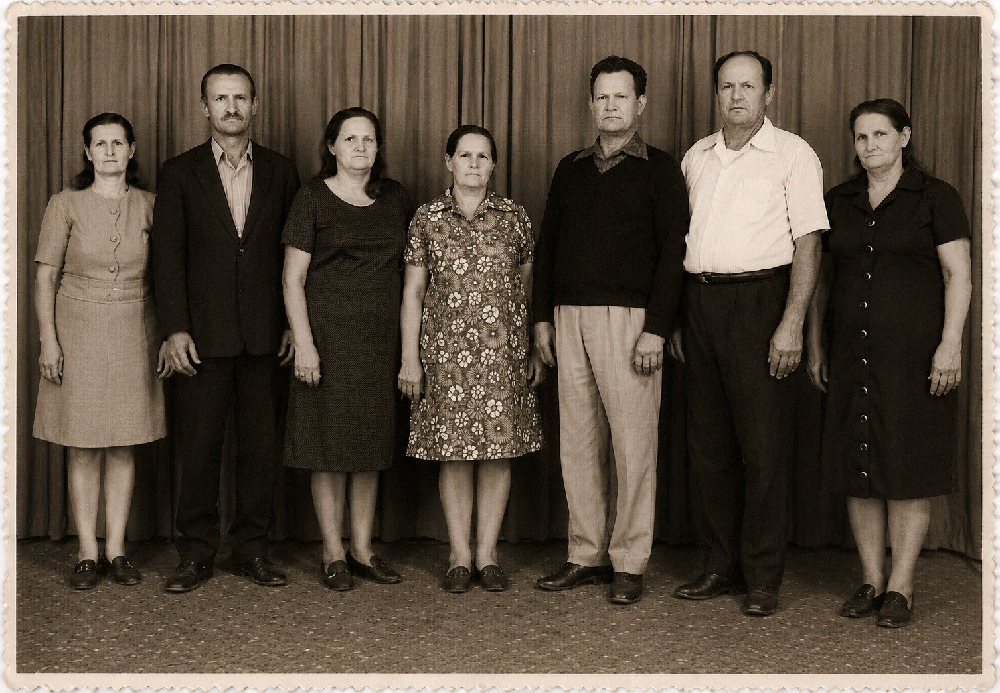

Teil I · Echos im Bergland von Santa Catarina
Kapitel 3 — Die Bruderschaft der Detektiv-Cousins
27,6° S · 48,5° W, Florianópolis, SC
Kein Beobachter sieht das ganze Gewitter. Das Netz sieht es.
Zwei ernsthafte Menschen aus der Familie haben die Geschichte desselben Mädchens aufgeschrieben, und sie sind sich weder über das Jahr noch über den Kontinent ihrer Geburt einig. Nach meiner Schwester wurde Gertrudes, die Schwester meines Vaters, am 5. Mai 1913 in der Einwandererbaracke von Laguna geboren. Nach einem Cousin wurde sie am 22. Oktober 1911 geboren, noch in Deutschland, und kam mit einem Jahr auf der Formosa herüber. Auf diesen Widerspruch bin ich nach und nach gestoßen.
Hundert Jahre später
Am 30. März 2013 kamen die Nachkommen von João und Maria Meyer Haas zusammen, um den hundertsten Jahrestag ihrer Ankunft in Brasilien zu feiern. Wir waren, nach der Zählung, die man damals machte, mehr als sechshundert direkte Nachkommen, verstreut über Santa Catarina, Paraná und andere Winkel des Landes und der Welt. Ein guter Teil davon war dort.
Ich werde das Fest nicht rekonstruieren. Ich habe keine Notizen von jenem Tag, und die Bilder, die in der Erinnerung umgehen, sind zu vage, um daraus eine Szene zu machen, ohne am Ende etwas zu erfinden. Was mir vom hundertsten Jahrestag geblieben ist, ist ein Text. Meine jüngere Schwester, Marise Haas Lourenço, schrieb an jenem Tag eine Geschichte von João und Maria und las sie vor, unterzeichnet mit „Florianópolis, März 2013“. Dieser Text ist bis heute die vollständigste Quelle, die die Familie über die beiden besitzt, und ein guter Teil von Teil II dieses Buches stützt sich darauf.
Archivkarte: Geschichte von João und Maria Meyer Haas, Text von Marise Haas Lourenço, vorgelesen zum hundertsten Jahrestag der Ankunft (30.03.2013), unterzeichnet mit „Florianópolis, März 2013“. Digitale Kopie im Repositorium der Familie: livro/fontes/historia_joao_e_maria_marise_2013.txt. Von der Autorin angegebene Quellen: Dokumente und Fotos; Recherchen in Archiven, Museen und Bibliotheken; Interviews; Erzählungen.
Ich habe diesen Text nach jenem Tag oft gelesen, und jede Lektüre zeigte mir etwas anderes. Beim ersten Mal las ich ihn als Enkel: eine bewegende, gut erzählte Geschichte, mit Verlusten und Errungenschaften, mit dem Mut der Großeltern und der Dankbarkeit der Nachkommen. Beim zweiten Mal las ich ihn als Forscher und begann zu unterstreichen. Beim dritten Mal las ich ihn als Meteorologe und merkte, dass der Text selbst das Ergebnis eines Netzes war.
Marise beginnt mit einer Erklärung zur Methode, die ich gern selbst geschrieben hätte. Sie sagt, viele hätten dazu beigetragen, dass die Geschichte geschrieben werden konnte, und um niemanden zu vergessen, nenne sie lieber gar keinen Namen. Sie sagt, der Text „entspringt nicht dem Kopf der Person, die ihn geschrieben hat“, sondern versuche, der Wahrheit so nahe wie möglich zu kommen. Und sie zählt die Quellen auf: Dokumente und Fotos, Recherchen in Archiven, Museen und Bibliotheken, Interviews, Erzählungen. Darin steckt, ohne dass sie das Wort benutzt, die genaue Beschreibung einer Synthesearbeit: viele Teilbeobachtungen von ungleicher Qualität, zu einem einzigen Bild zusammengefügt.
Gleich danach macht sie eine Bemerkung, die mir damals nur wie eine Höflichkeit vorkam und die ich heute für den wichtigsten Satz des Textes halte. Die Familie Haas, schreibt sie, „ist kein Familienname“, sondern die Gesamtheit unzähliger anderer, ohne die es keine Familie gibt. Und sie dankt einigen davon namentlich: den Meyers, der Familie der Mota; den Sebolds, der Familie von Onkel Augusto; den da Rosas, der Familie von Tante Rosalina; den Klettenbergs, der Familie von Tante Paula; den Boeings, der Familie von Onkel João; den Nagels, der Familie von Onkel Paulo; den Doerners, der Familie von Tante Adelina, die meine Mutter war; und den Sautners, der Familie von Onkel Martin. Und damit allen anderen Familiennamen, ohne die jene Familie von mehr als sechshundert Menschen nicht existieren würde.
Wie genau diese Liste war, verstand ich erst Monate später, als ich sie mit einer anderen Quelle verglich. Aber schon beim ersten Lesen berührte sie mich aus einem anderen Grund. Ich hatte jahrelang an meine Genealogie als an eine Linie gedacht, die Haas-Linie, die von mir zu meinem Vater hinaufstieg, von meinem Vater zum Fata, vom Fata nach Bayern. Marise sagte, mit aller Behutsamkeit, dass diese Linie nicht für sich allein existierte. Dass jede Generation aus der Begegnung zweier Familien entstanden war und dass die Hälfte, die nicht den Familiennamen trug, für das Ergebnis genauso verantwortlich war wie die andere. Es war dasselbe, was ich am Tisch in Vidal Ramos gesehen hatte, zwischen den Haas meines Vaters und den Doerners meiner Mutter. Jetzt stand es geschrieben.

Der Text und was er nicht sagt
Marises Text erzählt die Geschichte der Reihe nach. Die Hochzeit 1907, noch in jungen Jahren. Johanns Handwerk, aus einer Maurerfamilie, Fachmann für Stuck, Dolmetscher zwischen Mundarten. Marias Arbeit, die gegen Lohn Kühe molk. Die Krise in Deutschland, die Kriegsgefahr, der frühe Tod der beiden ersten Töchter, Hildegard und Frida, „aus Gründen, die wir nicht kennen“. Die Geburt von Luisa 1910 und von Walter 1912. Die Entscheidung aufzubrechen, getroffen, so stellt sie es sich vor, nach vielen Gesprächen und vielen Meinungen dafür und dagegen. Die Einschiffung auf der Formosa in Marseille, mit der schwangeren Maria und den beiden Kleinen auf dem Arm.
Dann die Ankunft. Der Text sagt, das Schiff sei am 26. März 1913 in Brasilien angekommen, die Ausschiffung in Rio de Janeiro sei verweigert worden, und der Dampfer sei von Hafen zu Hafen die Küste entlanggefahren, unter Quarantäne, mit zu vielen Passagieren, schlechtem Essen und mangelhafter Hygiene, und mit vielen Toten an Bord. Die Familie sei schließlich in Laguna an Land gegangen, in die Einwandererbaracke gebracht worden, und dort sei sechs Tage später, am 5. Mai, Gertrudes geboren worden. Luisa und Walter, von der Reise geschwächt, hätten es nicht überstanden. Fast nichts davon, so sollte ich später herausfinden, hält den Dokumenten stand.
Von da an führt die Geschichte zum Lote 17, dem Landlos Nr. 17, in Rio do Ouro, heute Anitápolis, nach Ituporanga, Rio Novo, Águas Negras, zu den Bauten der Stadt, zum Krieg, zum Radio im Keller, zum Alter in Ribeirão das Pacas und zu den Gräbern in Aurora. Marise verschweigt die harten Teile nicht. Sie spricht von der Politik der Landnahme auf indigenem Gebiet und von den Bugreiros, den Indianerjägern, die pro Kopf bezahlt wurden, und nennt das beim Namen, den es verdient: ein vom Staat geförderter Völkermord. Sie spricht von den Nachrichten über Gewalt gegen Deutschstämmige während des Krieges, die die Familie erreichten und den Fata dazu brachten, das Gewehr geladen in Reichweite zu halten. Und sie endet mit einer Frage, die sie selbst beantwortet: „Klingt das nach einer traurigen Geschichte? Nein, traurig ist sie nicht.“
Als Enkel stimmte ich zu. Als Forscher begann ich Fragen zu stellen, die der Text nicht beantwortete und auch nicht beantworten musste. An welchem Tag genau verließen sie Deutschland? Wurde die Ausschiffung in Rio wirklich verweigert? Gab es eine Quarantäne? In welchem Hafen von Santa Catarina gingen sie an Land? Wo wurden Luisa und Walter begraben? Wenn Gertrudes in der Baracke von Laguna geboren wurde, gibt es dann einen Taufeintrag in der Pfarrei? Und woher in Deutschland kamen die beiden? Der Text nennt kein einziges Dorf.
Ein Text, der geschrieben wurde, um bei einer Hundertjahrfeier vor sechshundert Menschen vorgelesen zu werden, ist nicht der Ort für Fußnoten. Es waren Fragen, die nur andere Dokumente beantworten konnten, und ich wusste, dass einige dieser Dokumente schon in den Händen von jemandem aus der Familie waren.
Die Tabelle aus Londrina
Dieser Jemand war mein Cousin ersten Grades Agenor Haas.
Agenor wurde 1943 in Ituporanga geboren, als ältester Sohn von Alexandre Haas und Paula Klettenberg, was ihn auf demselben Weg wie mich zum Enkel des Fata und der Mota macht, nur zweiundzwanzig Jahre früher. Er ist Bauingenieur, Absolvent der Bundesuniversität von Paraná, hat sein Leben der Ausführung von Bauprojekten gewidmet und lebt seit vielen Jahren in Londrina. Jahrelang hat er, ohne Aufhebens, mit der Geduld eines Ingenieurs und der Methode eines Menschen, der an Kostenvoranschläge und Zeitpläne gewöhnt ist, eine Tabelle mit allen Nachkommen von Johann und Maria angelegt, die er finden konnte.
Als die Tabelle bei mir ankam, in einem der vielen Nachrichtenwechsel, die wir hatten, brauchte ich eine Weile, um zu begreifen, wie groß das war, was da vor mir lag. Es sind 291 Zeilen. In der ersten Spalte die Kinder von Johann und Maria und ihre Ehepartner; in der zweiten die Enkel; in der dritten die Urenkel; in der vierten die Ururenkel. Nach der Zusammenfassung, die der Tabelle beiliegt, sind es 11 Kinder, 63 Enkel, 194 Urenkel und 109 Ururenkel. In vielen Zellen stehen Kommentare, Agenors Notizen, insgesamt 55, mit Daten, Orten, Berufen und kleinen Biografien.
Eines der ersten Dinge, die mir auffielen, war, dass die meisten dieser Notizen den Computer nicht verlassen durften. Agenor hatte gesammelt, was die Familie ihm schickte, und die Familie schickte alles: vollständige Anschriften, Telefonnummern, E-Mail-Adressen, Schulbildung, Beruf, Familienstand, Namen von Kindern. Es war ein kostbares Porträt einer Familie zu einem bestimmten Zeitpunkt zu Beginn des 21. Jahrhunderts, und es war auch eine Sammlung persönlicher Daten lebender Menschen, die ihrer Veröffentlichung nie zugestimmt haben. Deshalb kommt keine dieser Angaben in dieses Buch. Über die lebenden Nachkommen spreche ich nur in Zahlen. Von den Notizen verwende ich nur die, die die Stammeltern und die Kinder von Johann und Maria betreffen, die alle schon verstorben sind oder zu den Gestalten der Familiengeschichte gehören. Wenn eines Tages ein Cousin seine eigene Geschichte erzählen will, soll er sie mit seiner eigenen Stimme erzählen.
Die Notizen zu den Stammeltern aber waren Gold wert.
In Johanns Zelle schrieb Agenor eine kleine Zusammenfassung seines Lebens. Dort steht, er sei Maurer gewesen, Deutscher, geboren in Leonberg, „das heute Maxhütte heißt“, in Bayern, Sohn von Josef Haas und Franziska. Er habe am 3. August 1907 in Eibenstock geheiratet. Er habe Deutschland am 13. März 1913 verlassen und sei am 26. April nach 44 Tagen Reise auf dem Schiff Formosa in Rio de Janeiro angekommen. In seinen Worten: „Die Eintragung ihrer Ausschiffung in Florianópolis wurde noch nicht gefunden.“ Er habe bis 1918 in Rio do Ouro gelebt, dann in Rio Novo, dann in der Stadt Ituporanga, wieder in Rio Novo, ab 1930 in Águas Negras und schließlich in Rio das Pacas, Aurora, wo er am 19. März 1969 starb. In Marias Zelle steht, sie sei am 7. April 1888 in Heimaden geboren, Tochter von Adam und Franciska Meyer, und am 8. November 1973 gestorben.
Es war das erste Mal, dass ich die Namen von Johanns Eltern schriftlich sah. Es war das erste Mal, dass ich ein Hochzeitsdatum sah. Es war das erste Mal, dass ich das Wort Maxhütte sah. Und es war, wie ich bald merkte, auch das erste Mal, dass ich die Geschichte anders erzählt sah als in Marises Text.
Wenn die Quellen sich widersprechen
Ich legte die beiden Fassungen nebeneinander, wie ich es tue, wenn ich zwei Reanalysen desselben Sturms vergleiche. Wenn zwei Modelle übereinstimmen, atmet man auf. Wenn sie sich widersprechen, beginnt die interessante Arbeit, denn der Unterschied zwischen ihnen zeigt gewöhnlich genau auf die Stelle, an der die Daten am dürftigsten sind.
Die Widersprüche zeigten sich sofort.
Der erste betraf Johanns Geburtsdatum. Agenor schrieb 8. Juli 1884. Das Datum, das ich heute für sicher halte, ist ein anderes und stammt aus einem Dokument, von dem ich erst an seiner Stelle erzähle. Der Unterschied ist klein, nur wenige Tage, aber in einer genealogischen Untersuchung können wenige Tage den Unterschied ausmachen zwischen dem Finden und dem Nichtfinden eines Eintrags in einem Standesamtsregister. Damals konnte ich noch nicht wissen, welches der beiden Daten stimmte.
Der zweite betraf das Datum der Abreise. Agenor sagte 13. März 1913. Die Familie bewahrt eine Fotografie auf, die vor der Reise aufgenommen wurde, mit einer deutschen Inschrift auf der Rückseite: „Zum Andenken! vor unserer Abreise nach Brasilien, 7. März 1913“. Ein Abschiedsfoto kann einige Tage vor der Einschiffung gemacht worden sein, und die beiden Daten schließen sich nicht unbedingt aus. Aber sie waren ein weiteres Teil, das eingepasst werden musste.
Der dritte betraf die Ankunft. Marise sprach vom 26. März 1913 in Rio de Janeiro. Agenor sprach vom 26. April und rechnete nach: 44 Tage Reise. Ich machte dieselbe Rechnung, und sie geht auf: Vom 13. März bis zum 26. April sind es tatsächlich 44 Tage. Agenors Notiz war in sich stimmig. Nur war der Tag derselbe, der 26., und der Monat ein anderer. Das hatte ganz den Anschein eines einzigen Versehens, eines vertauschten Monats auf irgendeinem Papier irgendwann im Lauf der Überlieferung, das sich dann in die Berechnung der Tage fortgepflanzt hatte. Es war, als fände man in einer Datenreihe einen Wert, der vollkommen zu seinen Nachbarn passt, bis auf eine Ziffer.
Der vierte war der schwerwiegendste, und er betraf Gertrudes. Nach dem Text zum hundertsten Jahrestag wurde sie am 5. Mai 1913 in der Einwandererbaracke von Laguna geboren, sechs Tage nach der Ausschiffung: Sie war das Kind, das Maria während der Reise im Leib trug. Nach Agenors Tabelle wurde Gertrudes am 22. Oktober 1911 geboren, noch in Deutschland, und kam mit einem Jahr auf der Formosa herüber.
Der fünfte hing mit dem vierten zusammen. In Marises Text hießen die beiden Kinder, die nach der Ankunft starben, Luisa und Walter, 1910 und 1912 in Deutschland geboren, und sie starben in Laguna. In Agenors Tabelle gibt es weder Luisa noch Walter. Stattdessen gibt es eine Lina und einen Valter, die in Brasilien, in Rio do Ouro, geboren und klein gestorben sein sollen, begraben in Anitápolis. In der Tabelle stehen die beiden zwischen Alexandre, Jahrgang 1917, und Agnes, Jahrgang 1920, als wären sie in diesem Zeitraum geboren. Es gibt sogar ein merkwürdiges Detail: In Valters Notiz heißt es, er „starb, als sie noch klein war“, in der weiblichen Form, als wäre der Satz aus Linas Notiz kopiert und nicht berichtigt worden.
Schließlich war da Eibenstock, der Ort der Hochzeit, der weder in der Nähe von Leonberg noch in der Nähe von Heumaden lag. Und es gab ein Detail bei der Zählung. Die Zusammenfassung spricht von elf Kindern; aber als ich die erste Spalte Zeile für Zeile durchging, fand ich zwölf Namen, weil der kleine João, der Jüngste, der als Kind starb, allein gegen Ende der Tabelle auftaucht. Nach Marises Text kommt man ebenfalls auf zwölf: die vier verlorenen Kinder, die sieben, die groß wurden, und João. Der Unterschied scheint hier nur davon abzuhängen, wer zählt und wie.
Eine Zeit lang glaubte ich, ich müsste mich zwischen den beiden Quellen entscheiden. Dann merkte ich, dass das nicht der Fall war. Keine der beiden war ein Originaldokument. Beide waren Zusammenfassungen, gemacht von ernsthaften Menschen, auf der Grundlage von Erinnerungen und Papieren, die in der Familie umliefen, und jede hatte Fehler und Treffer von ihren eigenen Quellen geerbt. Ich brauchte eine unabhängige Beobachtung.
Sie tauchte in Gestalt einer Passagierliste auf.
Archivkarte: Passagierliste des Dampfers Formosa, aus Marseille kommend, unterzeichnet „Rio, le 26 Mars 1913“. Zeilen 161 bis 164: Haas Johann, 28 Jahre, verheiratet; Haas Marie, 25 Jahre, verheiratet; Haas Luisa, 2 Jahre; Haas Walter, 1 Jahr. Alle Deutsche, Landwirte, dritte Klasse. Vermerk am Fuß des Blattes: „Le Nº 70 continue sur Santos. Restent 174 passagers“. Bild im Repositorium: imagens/doc_haas_navio_formosa_1913.jpg (abgebildet in Kapitel 5).
Das Manifest der Formosa ist das erste Dokument von außerhalb der Familie, das ich zu dieser Geschichte gefunden habe, und deshalb behandle ich es mit dem Respekt, der einer direkten Messung gebührt. Es bestätigt mehrere Dinge auf einmal. Es bestätigt das Schiff, es bestätigt Marseille, es bestätigt das Datum des 26. März 1913 in Rio de Janeiro, wie Marise gesagt hatte. Es bestätigt, dass Johann 28 Jahre alt war. Und es bestätigt, dass zwei Kinder an Bord waren, Luisa, zwei Jahre alt, und Walter, ein Jahr alt.
Und es führt keine Gertrudes auf.
Das schließt den Fall nicht ab, aber es wiegt schwer. Wäre Gertrudes im Oktober 1911 geboren worden, wäre sie mit anderthalb Jahren an Bord gewesen und würde, abgesehen von einem Eintragungsfehler, auf der Liste erscheinen. Mehr noch: Luisa wurde 1910 geboren und Walter 1912; zwischen die beiden ein weiteres Kind zu setzen, das im Oktober 1911 geboren wäre, wäre biologisch möglich, aber sehr unwahrscheinlich. Gertrudes wurde also nach der Reise geboren. Wann und wo, habe ich erst viel später herausgefunden, und ich erzähle es in Kapitel 5. Und das Manifest widerlegt noch einen anderen Teil der Überlieferung: Die vier Haas stehen lebend auf der in Rio unterzeichneten Liste, ohne jeden Vermerk eines Todesfalls an Bord. Was Lina und Valter betrifft, ist die einfachste Hypothese, dass es Luisa und Walter sind, durch mehrere Schichten Erinnerung hindurch gesehen: Lina könnte Luisas Rufname zu Hause gewesen sein, und Valter ist Walter, so geschrieben, wie man es auf Portugiesisch ausspricht. Und hier war Agenor näher an der Wahrheit als der Text zum hundertsten Jahrestag: Mein Vater hat mir erzählt, dass er mit seinen Geschwistern nach Anitápolis gefahren ist, um die sterblichen Überreste der kleinen Geschwister nach Ituporanga zu holen, wo Walter begraben liegt. Die Kinder starben in Rio do Ouro, nicht in Laguna.
Das Manifest hinterlässt auch eigene Fragen. Maria wird mit 25 Jahren geführt, wurde aber erst im April, nach der Ankunft, 25; ein Jahr Unterschied, das mich daran erinnert, dass Bordlisten in Eile ausgefüllt wurden, von Beamten, die aufschrieben, was man ihnen sagte. Und der Vermerk am Fuß des Blattes, wonach ein Passagier nach Santos weiterfuhr und 174 an Bord blieben, deutet auf ein Schiff hin, das weiter Menschen an der Küste verteilte, von Hafen zu Hafen, genau wie das Familiengedächtnis es erzählt. Agenors Satz über die Eintragung der Ausschiffung „in Florianópolis“, die nie gefunden wurde, bekommt einen anderen Sinn: Vielleicht wurde sie nicht gefunden, weil die Ausschiffung nicht dort stattfand.
Und dann erinnerte ich mich an Marises Liste der Familiennamen. Ich ging zurück zu Agenors Tabelle, zur ersten Spalte, wo jedes Kind von Johann und Maria neben seinem Ehepartner steht, und las die Vornamen der Reihe nach: Gertrudes und Augusto; Fernando, den Agenor Ferdinand schreibt, und Rosalina; Alexandre und Paula; Agnes und João; Elza und Paulo; Baldoíno und Adelina; Maria und Martin. Es sind genau die Onkel und Tanten, denen Marise dankt, in derselben Reihenfolge: Onkel Augusto, Tante Rosalina, Tante Paula, Onkel João, Onkel Paulo, Tante Adelina, Onkel Martin. Zwei Quellen, von verschiedenen Menschen in verschiedenen Städten geschrieben, ohne dass die eine gemacht worden wäre, um die andere zu überprüfen, und die an diesem Punkt ineinandergriffen wie Teile, die mit derselben Säge zugeschnitten waren. Es war das erste Mal in dieser Forschung, dass ich die ganz besondere Freude empfand, zwei unabhängige Beobachtungen übereinstimmen zu sehen.
Das Netz
Es gibt ein meteorologisches Instrument, das ich besonders schön finde: die Radiosonde. Es ist ein kleiner Kasten mit Sensoren für Temperatur, Feuchtigkeit und Luftdruck, befestigt an einem gasgefüllten Latexballon. Zweimal am Tag, zur selben Uhrzeit, lässt in Hunderten von Stationen rund um den Planeten jemand einen solchen Ballon steigen. Er steigt etwa anderthalb Stunden lang, sendet dabei Daten per Funk und platzt schließlich in mehr als zwanzig Kilometern Höhe. Jeder einzelne Aufstieg erzählt für sich wenig: das vertikale Profil der Atmosphäre an einem einzigen Ort, zu einem einzigen Zeitpunkt. Aber wenn man die Aufstiege aller Stationen zusammennimmt, zur selben Stunde gemacht, entsteht das dreidimensionale Bild der ganzen Atmosphäre.
Genau das geschah ab 2013 mit der Familie. Marise hatte ihr Stück, aus Interviews und Erzählungen. Agenor hatte seines, aus jahrelanger Korrespondenz mit den Zweigen, die über Paraná und Santa Catarina verstreut waren. Ich hatte die Erinnerungen an Vidal Ramos, die Aufnahme meiner Mutter, die Fotografien. Andere Cousins hatten andere Dinge: eine Urkunde in einer Schublade, einen Namen, an den sich eine Tante erinnerte, eine Fotografie ohne Beschriftung. Niemand hatte das vollständige Bild. Zusammen begannen wir, eine Karte zu haben.
In dieser Phase behandelte ich die Familie, wie ich eine Datenbank behandle. Berufskrankheit. Ich begann, jede neue Information zusammen mit der Quelle abzulegen, aus der sie stammte, jedes Datum mit dem Namen dessen, der es genannt hatte, jeden Widerspruch neben der konkurrierenden Fassung vermerkt. Als die Korrespondenz mit den Cousins zu groß wurde, um sie von Hand zu verfolgen, schrieb ich ein kleines Python-Programm, das meinen Posteingang nach den Nachrichten über Genealogie durchsucht und sie in einer einzigen Datei ordnet, mit Datum, Absender und Anhängen, damit nichts in einem vergessenen Ordner verloren geht. Es ist ein bescheidenes Programm, wie es ein Student an einem Nachmittag schreiben würde, aber es hat mir viele Abende erspart.
Später kam der Stammbaum zu FamilySearch, der großen gemeinschaftlichen Genealogie-Datenbank der Kirche Jesu Christi der Heiligen der Letzten Tage, in der jeder einen Verwandten hinzufügen oder berichtigen kann, sofern er die Quelle angibt. Der Vorteil ist enorm: Der Stammbaum gehört nicht mehr mir, sondern allen, die sich um ihn kümmern wollen. Der Nachteil ebenfalls: Jeder Fehler, einmal eingetragen, breitet sich aus. Dort zeigt sich der Zweifel an der Geburt meines Vaters im Kleinen, denn ein Eintrag lässt ihn in Rio Novo bei Águas Mornas geboren sein und nicht in Rio Novo bei Ituporanga. Noch ein Namensvetter auf der Lauer, diesmal innerhalb von Santa Catarina. Von Zeit zu Zeit lädt ein anderes Programm, ebenfalls in Python, den Teil des Stammbaums, der mich interessiert, aus der Datenbank herunter und speichert ihn in einer Datei in dem Format, das Genealogen zum Datenaustausch verwenden, GEDCOM. In der letzten, die ich erzeugt habe, umfasste der direkte Stammbaum von Matheus und Lucas etwa dreißig Personen, mehr als zweihundert zitierte Quellen und achtundfünfzig Paare geografischer Koordinaten, von deutschen Dörfern bis zu Friedhöfen in Santa Catarina.
Das Merkwürdige ist, dass die Daten umso hartnäckiger wieder zu Menschen wurden, je mehr ich die Familie als Daten behandelte. Ein Sterbedatum von 1913 in einer Tabellenzelle ist eine Zahl. Dasselbe Datum, wenn man entdeckt, dass es das eines zweijährigen Mädchens ist, das auf dem Arm der Mutter den Ozean überquerte und die ersten Monate in Brasilien nicht überlebte, passt nicht mehr in eine Zelle. Der Widerspruch zwischen Luisa und Lina, den ich zunächst als Konsistenzproblem behandelt hatte, endete als Frage nach dem Namen, mit dem eine Mutter ihre Tochter rief.
Wohin die Pfeile zeigen
Am Ende dieser Phase, die sich über einige Jahre hinzog, war das Netz zu einem Schluss gekommen, den keiner von uns auf einmal formulierte, den wir aber alle nach und nach annahmen.
Auf brasilianischer Seite gab es noch viel zu tun: den Geburtseintrag von Gertrudes suchen und die Sterbeeinträge von Luisa und Walter in Anitápolis, die Grundbücher von Anitápolis und die Friedhofsregister von Ituporanga prüfen, die Bauten in Ituporanga datieren. Aber die Fragen, die uns am meisten beschäftigten, würden nicht hier beantwortet werden. Wer waren Josef Haas und Franziska, die Eltern von Johann? Wer waren Adam und Franziska, die Eltern von Maria? An welchem Tag genau wurde Johann geboren? Waren Geschwister in Deutschland geblieben? Gab es in Leonberg oder in Heumaden noch jemanden vom selben Blut?
Diese Antworten standen nicht bei FamilySearch, nicht in Agenors Tabelle, nicht in Marises Text und nicht in meinem Posteingang. Sie standen in Büchern. In den Personenstandsbüchern eines kleinen bayerischen Standesamts, in den Tauf- und Heiratsbüchern einer katholischen Pfarrei in der Oberpfalz, von Hand in deutscher Schrift geschrieben, von Beamten und Pfarrern, die seit mehr als einem Jahrhundert tot waren. Einige dieser Bücher vielleicht digitalisiert in irgendeinem Diözesanarchiv. Andere, fast sicher, nur persönlich einzusehen, an einem Schalter, vor jemandem, der bereit war, sie aufzuschlagen.
Ich kann nicht genau sagen, wann dieser Schluss aufhörte, ein Satz zu sein, und zu einem Vorhaben wurde. Es gab keine Zeremonie. Es war nur die Feststellung, an einem der vielen Abende vor dem Bildschirm, dass alle Pfeile auf meiner Karte auf denselben Ort zeigten, auf der anderen Seite des Ozeans, und dass keiner von ihnen allein dort ankommen würde. Wenn ich wissen wollte, was am Ende jener Linien lag, musste jemand hinfahren.
Bis zu dieser Reise sollten noch einige Jahre vergehen. Vorher aber muss dieses Buch tun, was mich das Netz der Cousins gelehrt hat: in der Zeit zurückgehen und die Geschichte so erzählen, wie die Dokumente und die Erinnerungen es erlauben, mit offen gezeigten Zweifeln. Und zwar ein wenig vor 1913 und vor dem Kai von Marseille, in einem Arbeiterdorf in Bayern, im Schatten eines Eisenwerks, an einem Julitag des Jahres 1884.
Für euch zum Entdecken
- Wen hat Marise angehört, um den Text zum hundertsten Jahrestag zu schreiben? Sie hat es vorgezogen, keinen Namen zu nennen. Fragt sie, sie ist eure Tante, und fragt die älteren Cousins.
- Wer hat Agenor den Namen Lina genannt? Wurde Luisa zu Hause so gerufen, oder kam dieser Name von anderswo?
- In welchem Jahr holten die Geschwister die sterblichen Überreste der Kinder aus Anitápolis? Walter ist in Ituporanga begraben; und Luisa, wo liegt sie? Sucht in den Sterbeeinträgen von Anitápolis und in den Friedhofsregistern von Ituporanga.
- In welchem Hafen von Santa Catarina gingen die Haas an Land, wenn die Eintragung der Ausschiffung in Florianópolis nie aufgetaucht ist?